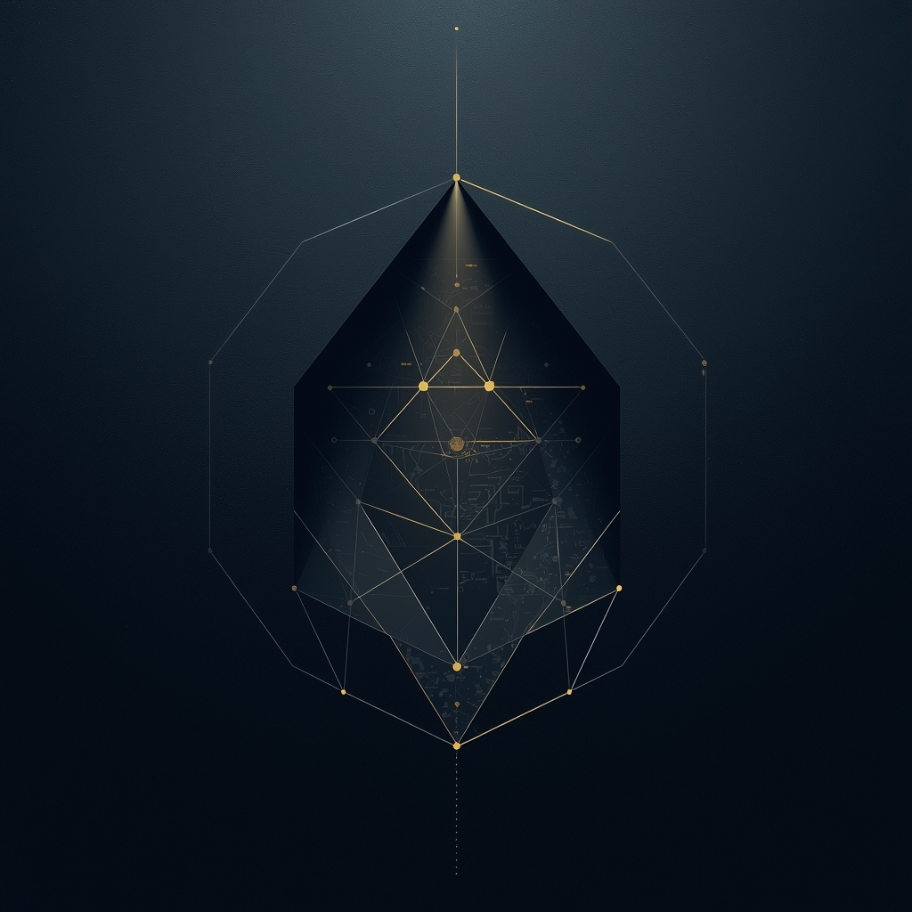

Tom Tot
Specialist in Extracting the Non-Obvious
🔍 Find hidden patterns where others see chaos.
🧩 Develop non-standard strategies for complex challenges.
💡 Turn non-obvious insights into clear solutions.
🔐 Контакты через Session ↙️

0571165c233236eafe3631d39e7cde3fcd6c9f1bb22b3a60b32803d07c86a8c773